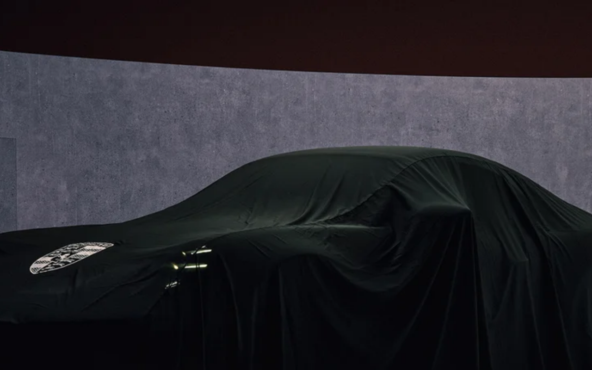

Design System Report
Porsche — dark is #0E0E12, not #000000
porsche.com의 다크 배경 비밀: #0E0E12. 순흑이 아니라 아주 미묘하게 파란 기운이 도는 near-black이다. 이 1비트 차이가 프리미엄 feel을 만든다.

Quick Start
5분 안에 Porsche처럼 만들기 — 3가지만 하면 80%
1 · 폰트 + weight
body {
font-family:
"Porsche Next",
"Arial Narrow",
Arial, sans-serif;
font-weight: 400;
}
2 · 다크 배경 + 텍스트
:root {
--bg: #0E0E12;
/* ⚠️ #000000 아님! */
--fg: #FFFFFF;
}
body {
background: var(--bg);
color: var(--fg);
}
3 · 브랜드 레드
:root {
/* Porsche Red */
--brand: #CC0000;
/* hover 다크 배경 */
--bg-hover: #1A1A24;
}
절대 하지 말아야 할 것: 배경을 순흑
#000000으로 두는 것. Porsche의 다크 배경은 #0E0E12—아주 미묘하게 파란 기운이 도는 거의 검정이다. 이 미묘한 차이가 프리미엄 feel을 만든다.
Default Theme
Dark
마케팅 사이트 기준
Brand Color
#CC0000
Porsche Red
Primary Font
Porsche Next
독점 — Oswald 대체
Btn Radius
8px
CSS 직접 파싱값
01
출처와 수집 기준
CSS 커스텀 프로퍼티를 직접 파싱했으며 AI 추론으로 컬러를 창작하지 않는다.
Source URL
https://porsche.comFetched2026-04-13
Extractorcurl + Chrome UA (5-tier fallback)
Token prefixN/A — CSS Modules + hash suffix 패턴
MethodCSS 커스텀 프로퍼티 직접 파싱 · AI 추론 없음
CSS ArchitectureBEM-ish + CSS Modules (
.DatabaseButton__wrapper__0808c 패턴)02
타이포그래피
Porsche Next — 좁고 기하학적인 독점 sans. 외부 대체재로 Oswald 또는 Bebas Neue가 narrow 비율을 유사하게 표현한다.
Display
Porsche Next — Porsche AG 독점
Fallback
"Arial Narrow", Arial, "Heiti SC", SimHei, sans-serif
Weight Normal
400
Weight Bold
700
CSS Variable
--porsche-font-family
라이선스
Porsche AG 독점. 외부: Oswald / Bebas Neue
03
컬러
다크 테마 기반 팔레트. 핵심은 배경이 #0E0E12(순흑 아님)이라는 것. Porsche Red #CC0000은 포인트 전용.
Brand Red + Dark Surfaces
Brand Red#CC0000
Dark BG#0E0E12
Hover BG#1A1A24
Light BG#EEEFF2
Neutral Ramp (CSS 파싱 빈도 순)
White×30#FFFFFF
Dark BG×20#0E0E12
Mid×2#555555
Light×2#EEEEEE
핵심 포인트: Porsche 다크 배경은
#0E0E12이지 #000000이 아니다. CSS selector .DatabaseButton__wrapper__0808c에서 직접 확인. hover 상태에서는 #1A1A24로 미묘하게 밝아진다. 이 세 단계(0E0E12 → 1A1A24 → FFFFFF)가 Porsche 다크 UI의 전체 명도 스펙트럼이다.
04
Radius
CSS에서 직접 파싱된 유일한 radius 값.
버튼
8px — .DatabaseButton__wrapper__0808c 직접 파싱
기타
N/A — 추가 radius 토큰 미감지
05
컴포넌트
다크 테마 버튼 — CSS에서 직접 파싱된 실제 스타일. 흰 테두리 + 8px radius가 핵심.
DatabaseButton 실제 스타일:
background:#0E0E12; border:1px solid #FFFFFF; border-radius:8px; padding:6px 10px; width:185px — CSS Modules 클래스 .DatabaseButton__wrapper__0808c에서 직접 파싱.
06
CSS 스니펫
루트 스타일시트에 복사해서 바로 쓸 수 있는 Porsche 디자인 토큰.
/* Porsche — copy into your root stylesheet */
:root {
/* Fonts */
--porsche-font-family: "Porsche Next", "Arial Narrow", Arial, sans-serif;
--porsche-font-weight-normal: 400;
--porsche-font-weight-bold: 700;
/* Brand */
--porsche-color-brand-red: #CC0000;
/* Surfaces (dark theme) */
--porsche-bg-page: #0E0E12;
--porsche-bg-hover: #1A1A24;
--porsche-bg-light: #EEEFF2;
--porsche-text: #FFFFFF;
--porsche-text-muted: #555555;
/* Key spacing observed */
--porsche-space-btn: 6px 10px;
--porsche-radius-btn: 8px;
}
// tailwind.config.js — Porsche
module.exports = {
theme: {
extend: {
colors: {
brand: {
red: '#CC0000',
},
surface: {
dark: '#0E0E12',
'dark-hover': '#1A1A24',
light: '#EEEFF2',
},
neutral: {
white: '#FFFFFF',
mid: '#555555',
light: '#EEEEEE',
},
},
fontFamily: {
sans: ['"Porsche Next"', '"Arial Narrow"', 'Arial', 'sans-serif'],
},
fontWeight: {
normal: '400',
bold: '700',
},
borderRadius: {
btn: '8px',
},
},
},
};
07
Do / Don't
Porsche 디자인을 구현할 때 지켜야 할 핵심 규칙.
✓ DO
- 다크 배경에
#0E0E12사용 (순흑 아님) - 버튼 테두리에
1px solid #FFFFFF사용 - hover 상태는
#1A1A24로 미묘하게 밝게 - Porsche Red
#CC0000은 포인트 컬러로만 절제 사용 - 버튼 radius
8px유지
✗ DON'T
- 다크 배경으로 순흑
#000000쓰지 말 것 —#0E0E12 - 배경 전체를 빨간색으로 채우지 말 것
- 밝은 테마 배경 쓰지 말 것 — Porsche 마케팅은 다크 테마 기본
font-weight 100이나200쓰지 말 것 —400이 기준